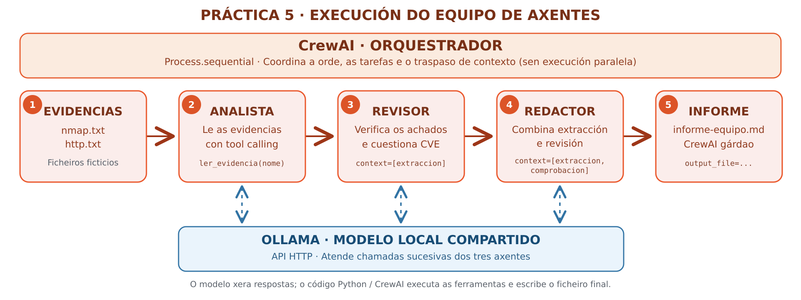

Práctica 5 — Equipos de axentes con CrewAI
Práctica 5 — Equipos de axentes con CrewAI e Ollama
Que achega esta práctica?
Na Práctica 3 encadeaches sesións de Cline manualmente. Na Práctica 4 programaches un axente con ferramentas. Agora CrewAI será responsable de asignar unha tarefa a cada rol, pasar resultados e coordinar a execución.
Escenario e obxectivos
Empregaremos os mesmos evidencias/nmap.txt e evidencias/http.txt da
Práctica 4.
O resultado será un segundo informe, informe-equipo.md, que poderemos
comparar co do axente Python.
O alumnado aprenderá a definir axentes, ferramentas, tarefas, contexto e procesos nun framework de orquestración; distinguirá un proceso secuencial dun xerárquico con xestor. Non haberá explotación nin escaneo dunha infraestrutura real.
| Peza | Que fai nesta práctica |
|---|---|
| Ollama | Serve o modelo local mediante API HTTP |
| Modelo | Xera as decisións e respostas de cada axente |
| CrewAI | Controla axentes, tarefas, intercambio de contexto e orde |
| Analista | Le as evidencias a través dunha ferramenta limitada |
| Revisor | Detecta afirmacións sen respaldo |
| Redactor | Xera o informe Markdown |
Esquema de execución: pipeline secuencial
O seguinte diagrama resume a orde real da execución e a dependencia entre as tarefas. Os números representan etapas do fluxo, non os pasos da guía de instalación. CrewAI orquestra o proceso, mentres que os tres axentes consultan o mesmo modelo servido por Ollama mediante a API.

Como ler o diagrama
As frechas laranxas indican o avance secuencial das tarefas.
As conexións azuis descontinuas representan as peticións e
respostas entre cada axente e Ollama; non significan que os
axentes se executen en paralelo. O analista le os ficheiros mediante
ler_evidencia(), o revisor recibe extraccion e o redactor recibe
extraccion e comprobacion. CrewAI garda o Markdown final a través
de output_file; o modelo non escribe ficheiros directamente.
Requisitos de memoria
Recoméndase a Práctica 2 (anfitrión con GPU) para evitar que varias chamadas sucesivas compitan cos recursos dunha VM de 6 GB. CrewAI pode empregar varios axentes co mesmo modelo Ollama; iso non significa que existan tres modelos distintos descargados. Un modelo pequeno en CPU pode tardar e fallar ao utilizar ferramentas.
Paso 1 — Contorna Python e instalación de CrewAI
O exemplo usa a API Python directa de CrewAI, sen xerar un proxecto coa CLI. Mantémolo deliberadamente sinxelo para poder ler toda a orquestración nun único ficheiro. CrewAI indica Python >= 3.10 e < 3.14; verifica a túa versión antes de instalar.
python3 --version
sudo apt update
sudo apt install -y python3-venv python3-pip
mkdir -p ~/ollama-crewai-lab/evidencias
cd ~/ollama-crewai-lab
python3 -m venv .venv
source .venv/bin/activate
python -m pip install --upgrade pip
python -m pip install 'crewai[litellm]'
python -m pip show crewai litellm
Se Python da VM non é compatible
Non uses --break-system-packages. Crea un contorno virtual cun Python
compatible (p. ex. 3.12 ou 3.13 instalado de forma separada) ou
executa o programa no equipo anfitrión. CrewAI cambia con frecuencia;
rexistra a versión usada no informe da práctica.
Paso 2 — Preparar evidencias e conexión a Ollama
Utilizaremos exactamente as mesmas evidencias ficticias da Práctica 4, pero esta práctica pódese realizar independentemente.
Opción A — Descargar as evidencias desde MkDocs
Gárdaos en ~/ollama-crewai-lab/evidencias/ no equipo onde
executarás equipo_crewai.py (transfire os ficheiros á VM se os
descargaches no navegador do anfitrión).
Opción B — Reutilizar as evidencias da Práctica 4. Se xa fixeches a práctica anterior no mesmo equipo:
Opción C — Crealas a man: segue os comandos do
paso 3 da Práctica 4,
pero no directorio ~/ollama-crewai-lab/.
En calquera dos tres casos, comproba os ficheiros e a API Ollama:
cd ~/ollama-crewai-lab
ls -l evidencias/nmap.txt evidencias/http.txt
# Opción A: Ollama corre localmente:
export OLLAMA_HOST=http://127.0.0.1:11434
# Opción B: Ollama corre no anfitrión con host-only:
# export OLLAMA_HOST=http://192.168.56.1:11434
export OLLAMA_MODEL=qwen3.5:4b
# Alternativa máis lixeira, menos fiable: qwen2.5:3b
curl -fsS "$OLLAMA_HOST/api/tags"
Privacidade: o modelo está servido localmente, pero CrewAI posúe telemetría técnica opcional/por defecto. Para este laboratorio desactívaa expresamente, e non habilites trazas compartidas nin ferramentas externas:
Seguridade dos datos
Usar Ollama non garante por si só que un framework adicional non
contacte con terceiros (telemetría, integradores, ferramentas web ou
trazas). Aquí só se configura o fornecedor ollama/ e unha ferramenta
de lectura local. Comproba ademais a rede e os plugins habilitados.
Paso 3 — Tres axentes con roles e tarefas diferenciadas
Crea o ficheiro equipo_crewai.py co código seguinte ou
descarga o script Python
e gárdao en ~/ollama-crewai-lab/. Se o descargas, non tes que volver
copiar manualmente o bloque.
#!/usr/bin/env python3
"""Práctica 5: tres axentes coordinados con CrewAI e Ollama local."""
import os
from pathlib import Path
from crewai import Agent, Crew, LLM, Process, Task
from crewai.tools import tool
BASE = Path(__file__).resolve().parent
DATOS = BASE / "evidencias"
INFORME = BASE / "informe-equipo.md"
MODELO = os.getenv("OLLAMA_MODEL", "qwen3.5:4b")
SERVIDOR = os.getenv("OLLAMA_HOST", "http://127.0.0.1:11434")
@tool("Ler evidencia do laboratorio")
def ler_evidencia(nome: str) -> str:
"""Lee el fichero nmap.txt o http.txt del laboratorio autorizado."""
if nome not in ("nmap.txt", "http.txt"):
return "ERROR: fichero no autorizado"
ficheiro = DATOS / nome
if not ficheiro.is_file():
return f"ERROR: no existe {nome}"
return ficheiro.read_text(encoding="utf-8")[:4000]
def main() -> None:
# CrewAI resolve output_file respecto ao directorio de execución.
os.chdir(BASE)
# Ollama é o único fornecedor de inferencia configurado.
llm = LLM(model=f"ollama/{MODELO}", base_url=SERVIDOR, timeout=180)
analista = Agent(
role="Analista de evidencias",
goal="Extraer feitos verificables de dous ficheiros do laboratorio",
backstory="Analista técnico que diferencia observacións de hipóteses.",
llm=llm,
tools=[ler_evidencia],
allow_delegation=False,
max_iter=5,
verbose=True,
)
revisor = Agent(
role="Revisor de rigor técnico",
goal="Detectar afirmacións non sustentadas polas evidencias",
backstory="Revisa informes e esixe evidencias antes de atribuír CVE.",
llm=llm,
allow_delegation=False,
max_iter=4,
verbose=True,
)
redactor = Agent(
role="Redactor técnico",
goal="Redactar un informe breve, trazable e comprensible",
backstory="Redactor profesional de informes de auditoría autorizada.",
llm=llm,
allow_delegation=False,
max_iter=4,
verbose=True,
)
extraccion = Task(
description=(
"Usa la herramienta de lectura para consultar nmap.txt y http.txt. "
"Enumera los hechos exactos. No inventes versiones ni CVE. "
"Es un laboratorio ficticio; no ejecutes escaneos."
),
expected_output="Relación de hechos que indique su archivo de origen.",
agent=analista,
)
comprobacion = Task(
description=(
"Revisa críticamente los hallazgos de la tarea anterior. "
"Separa hechos, hipótesis y validaciones necesarias. "
"Corrige cualquier atribución de vulnerabilidad sin evidencia."
),
expected_output="Lista de afirmaciones sustentadas y reservas técnicas.",
agent=revisor,
context=[extraccion],
)
redaccion = Task(
description=(
"Con las dos tareas previas redacta un informe Markdown con "
"título, tabla de evidencias, límites y comprobaciones pendientes. "
"No presentes servicios abiertos como vulnerabilidades probadas."
),
expected_output="Informe Markdown breve, coherente y verificable.",
agent=redactor,
context=[extraccion, comprobacion],
markdown=True,
output_file=INFORME.name,
)
equipo = Crew(
agents=[analista, revisor, redactor],
tasks=[extraccion, comprobacion, redaccion],
process=Process.sequential,
verbose=True,
memory=False,
)
resultado = equipo.kickoff()
print("\n[RESULTADO DO EQUIPO]\n", resultado)
if INFORME.is_file() and INFORME.stat().st_size > 0:
print(f"\n[OK] Informe gardado: {INFORME}")
else:
raise SystemExit("[ERROR] Non se xerou informe-equipo.md")
if __name__ == "__main__":
main()
Explicación dos elementos:
LLM(model="ollama/...", base_url=...): indica a CrewAI que use o servidor Ollama, e non un fornecedor comercial. Esta integración emprega LiteLLM.@tool(...): define unha ferramenta de lectura para o analista. A súa lista branca impide consultar outros ficheiros do sistema.Agent(...): tres instancias con rol, obxectivo e capacidades diferentes.Task(...): cada axente recibe unha tarefa e un resultado esperado.context=[...]: o revisor utiliza o resultado do analista e o redactor recibe os resultados dos dous anteriores.Process.sequential: CrewAI executa as tarefas en orde definida.output_file=INFORME.name: utiliza un nome relativo; xunto conos.chdir(BASE), gardainforme-equipo.mdno directorio do script, sen conceder ao modelo acceso directo ao sistema de ficheiros.
O esquema do pipeline secuencial representa visualmente esta coordinación e a función de Ollama como modelo compartido.
Isto é orquestración, pero non delegación autónoma
No proceso secuencial, xa definimos que axente realiza cada tarefa.
CrewAI executa e comparte contexto, sen que sexas ti quen teña que
lanzar manualmente tres comandos distintos. Para que un xestor decida
a asignación de tarefas necesitas Process.hierarchical, explicado
como ampliación no Paso 5.
Paso 4 — Executar, verificar e comparar
cd ~/ollama-crewai-lab
source .venv/bin/activate
export CREWAI_DISABLE_TELEMETRY=true
export OTEL_SDK_DISABLED=true
time python equipo_crewai.py
test -s informe-equipo.md && echo "Informe multiaxente creado"
sed -n '1,160p' informe-equipo.md
Comprobación: observa nos rexistros os roles diferentes, as saídas das tarefas e o uso da ferramenta de lectura polo analista. Se un modelo pequeno non chama a ferramenta, non deas por válida a análise: hai que repetir a proba cun modelo axeitado ou explicar a limitación. Non está garantida a reproducibilidade textual de dúas execucións.
Compara informe-equipo.md con informe-axente.md da Práctica 4:
| Criterio | Que debes comprobar |
|---|---|
| Factualidade | Identifica correctamente 22/tcp e 80/tcp |
| Trazabilidade | Indica de que ficheiro sae cada dato |
| Rigor | Non inventa versións nin CVE |
| Coordinación | Hai tres tarefas diferenciadas con traspaso de contexto |
| Verificación | Xerou un ficheiro real e pódese revisar |
| Rendemento | Tempo consumido, RAM/VRAM e erros observados |
Paso 5 — Ampliación: xestor e proceso xerárquico
CrewAI tamén permite un equipo onde un axente xestor distribúe e revisa
traballo dos demais. Para probalo, crea unha copia do script e modifica
as definicións de tarefas para eliminar as asignacións explícitas
agent=analista, agent=revisor e agent=redactor. Conserva as descricións,
context e output_file; crea o equipo así:
# Substitúe só a definición de equipo na copia do script,
# e retira agent=... das tres Task, para permitir a asignación polo xestor.
equipo = Crew(
agents=[analista, revisor, redactor],
tasks=[extraccion, comprobacion, redaccion],
process=Process.hierarchical,
manager_llm=llm,
verbose=True,
memory=False,
)
Non se recomenda comezar por aquí cun modelo de 3B/4B
O xestor tamén require inferencias, contexto e decisións de delegación. Non é equivalente a lanzar tres procesos paralelos: xerárquico describe quen asigna e revisa as tarefas, non unha promesa de maior velocidade. Reserva esta ampliación para hardware máis potente e documenta os fallos de delegación ou de tool calling cando se produzan.